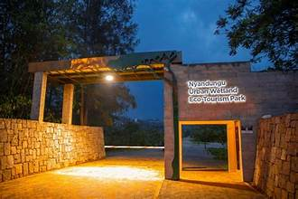
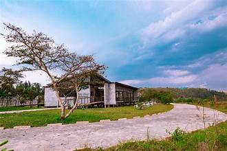
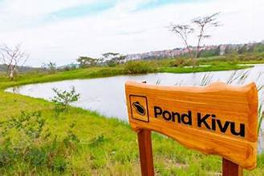

Nyandungu Eco-Park, Rwanda's first restored urban wetland transformed into an eco-park, covers 121 hectares and thrives with a variety of flora and fauna. It's a destination for those seeking tranquility, adventure, and an education in biodiversity.
Explore different parts of the park, each offering unique experiences. Witness the lush Acacia Savannah, enchanting Mixed Woodlands, serene Indigenous Woodlands, and vibrant Wetland Vegetation. Discover the artificial recreational ponds, each named after Rwanda's iconic lakes.




Activities
- Bird watching
- Walking trails
- Picnic areas
Facilities
- Visitor center
- Guided tours
- Eco‑friendly cafes
| Ticket Type | Price |
|---|---|
| Adult | 2000 RWF |
| Child | 1000 RWF |